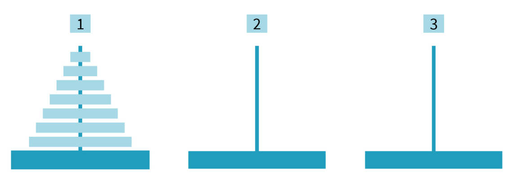
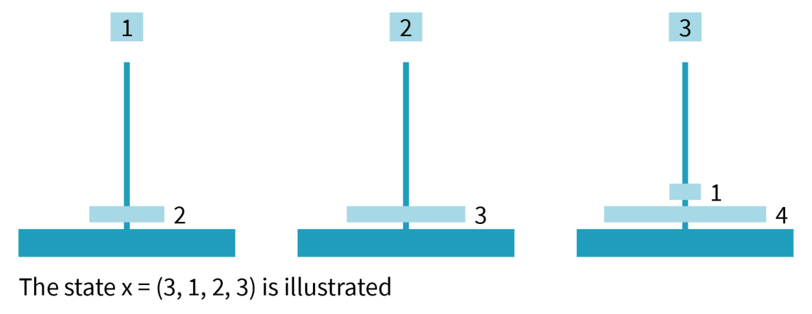
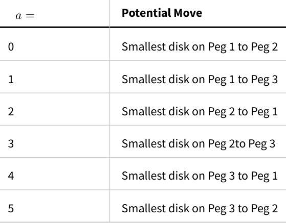

DLMAIRIL01 - Source-derived printable review sheet
Condensed from the same learning note. No additional teaching topics or official examination questions. Formulas and fonts render offline.
The Hanoi implementation converts legal disk moves into a deterministic shortest-path problem, enumerates configurations by integer indices, and follows the converged successor policy to reconstruct the published minimum-move path.
Source notation caution: the illustrative vector and accompanying prose on p. 191 are not consistent. Interpret the preserved drawing using the explicit rule above: each component records a disk's peg, not a disk's vertical height.
| Term | Meaning |
|---|---|
| Configuration state | The peg containing each disk. |
| Admissible action | A move obeying top-disk and size-order rules. |
| Shortest-path value | Minimum remaining number of moves. |
| Canonical index | Unique integer identifying an enumerated state. |
| Old/new sweep arrays | Separate preceding and updated value estimates. |
| Successor policy | Policy storage containing the next state's index. |
states; six possible peg-to-peg move types, restricted by admissibility.
Enumerate with incState, access by pHash, reconstruct through policyFunction and stateMap. Three-disk output: seven moves, eight states.
The published three-disk path starts with all disks on peg 1 and ends with all on peg 3. The smallest disk first moves to peg 3, permitting the next disk to move to peg 2; following the stored successor indices yields the seven-move solution shown above.
Study these with the detailed explanation in the linked Obsidian note.



Answer before expanding. Open the answers before printing to include them.
The move rules already determine the size ordering within every peg.
Three to the power N.
An empty source or placing a larger disk on a smaller top disk.
The minimum number of moves to reach the terminal configuration.
Enumerate vectors with a three-symbol odometer.
Convert a state vector to its canonical integer index.
Evaluate one sweep against a fixed preceding value function.
The integer index of the minimizing successor state.
A path includes its initial state as well as every successor.
Seven moves and eight states.
Learning note: 06_worked_appendices/b_towers_of_hanoi.
Course book pp. 187-201. Printed page + 2 = PDF viewer page. Personal-study use.